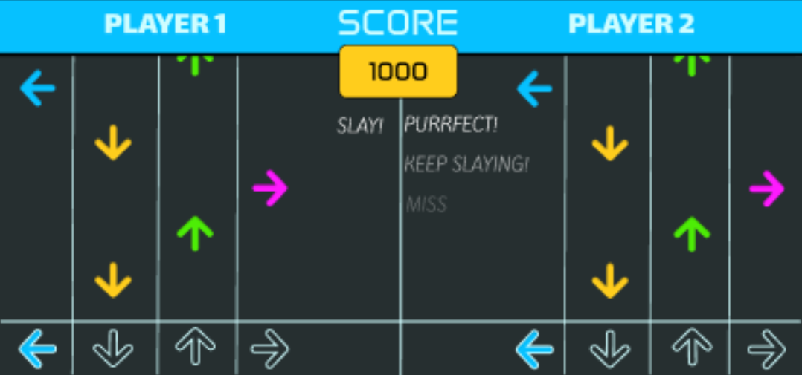

Dancing together through sound
The project explored whether interactive sound could strengthen teamwork and social interaction in a cooperative dance game.
Two players used custom-built dance pads with four directional pressure buttons to follow beat-synchronised arrows. A shared score, multipliers and visual feedback encouraged players to work towards the same goal.
Interactive audio was used to provide confirmation, motivation and feedback throughout the game. We evaluated it with an A/B test of 12 players (6 pairs) at AAU's Friday Bar, comparing the game with and without interactive sound.

Interactive Sound
Audio cues like a "pling" confirmed successful steps and helped players stay motivated.
Cooperative Play
Shared scoring and progress were designed to encourage players to focus on a common goal.
Key Finding
Sound was a nice extra for feedback and motivation, but players mostly focused on their own steps and relied on the visuals, so it did not clearly increase teamwork.